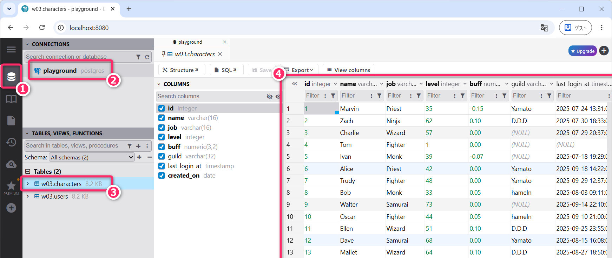
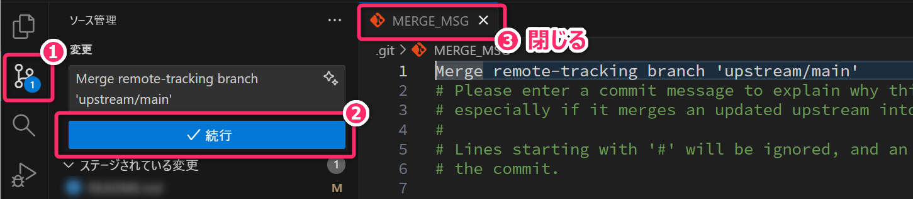

1 連絡・授業概要など
1.1 連絡
- 小テスト❸ を実施します。
- シラバス記載のように、小テストは最終評価の 35% に相当します。
- 遅刻・欠席等により追試験を希望する場合は 第01回講義で案内した手続き をしてください。
- 今回の講義内容は、前回講義 の内容 ( ＝演習環境における SQL の実行手順、基礎的な
SELECT文 ) をひととおり理解していることを前提とします。まだ、それらの内容 (授業時間外学習のセクションを含む) を終えていない人は、まずは、そちらを終えてから取り組んでください。
1.2 今回の達成目標
ORDER BY・LIMIT・OFFSETを組み合わせ、必要な順序と範囲でレコードを取得できる。WHERE句と各種述語を使用し、NULLの扱いに注意しながら、条件に合うレコードを抽出できる。INSERT文とROLLBACKを使用し、追加したレコードを残さずに、データ挿入の動作を確認できる。
2 準備
今回の講義 (授業時間外学習を含む) では、SQLの ORDER BY 句、LIMIT
句、OFFSET 句、WHERE 句、INSERT 文
について学んでいきます。
まずは、ハンズオン演習の準備として、以下の手順で、SQL 演習環境の動作確認、教材の更新の取得を実行してください。
2.1 SQL演習環境の動作確認 (前回復習)
今回も、第03回で作成した w03.users と w03.characters という「テーブル」を利用していきます。
今回の演習で作成する SQL ファイルの先頭には、SET search_path TO w03;
を記述してください。
search_path
を設定すると、テーブル名などにスキーマ名を指定しなかった場合に、w03
スキーマからテーブルが検索されるようになります。そのため、w03.users や
w03.characters を、単に users や characters
と記述できます。
ただし、search_path
の設定は、現在のデータベース接続（セッション）に対して適用されます。この環境では、SQLファイルを実行するたびに新しい接続が確立されるため、使用するSQLファイルごとに、先頭で設定する必要があります。
PostgreSQL において、名前空間としての「スキーマ」とは何ですか？
PostgreSQL において、
SET search_path TO ...;はどのような意味を持ちますか。これを実行しないと、どのような振る舞いになりますか？
- タスクトレイから Docker Desktop が起動していることを確認してください。
- 前回講義で作成したプロジェクトフォルダ (講義資料のとおりに作成していれば DB-PostgreSQL ) を VSCode で開いてください。
- VSCode のターミナルから
npm run db:upを実行して PostgreSQL と DbGate の2つのコンテナ を起動してください。 - http://localhost:8080/ もしくは http://127.0.0.1:8080/ から DbGate に接続して、w03.users テーブルと w03.characters テーブルが存在していることを確認してください。
DbGate では、次の手順で、テーブルを参照します。

🚨「Docker ボリュームを削除してしまった」などの理由でテーブルが存在しないときは、VSCode のターミナルから、以下のコマンドを再実行して、テーブルの作成とレコードの挿入を行なってください。
- これらのコマンドを実行すると、すでに存在するテーブルも含め、対象テーブルのデータが第03回の初期状態に戻ります。
npm run sql from-teacher/03/init-users.sql
npm run sql from-teacher/03/init-characters.sqlVSCode で sql/04/tmp.sql を新規作成して、次の SQL 文を記述し、保存してください。
sql/04/tmp.sql のエディタタブがアクティブな状態で
[Ctrl]+[Shift]+[B]を押下して SQL を実行してください。もしくは VSCode のターミナルから以下のコマンドを入力して SQL を実行してください。npm run sql sql/04/tmp.sql次のような実行結果 (結果セット) が得られることを確認してください。
id | name | age ----+-------+----- 1 | Alice | 20 2 | Bob | 25
2.2 教材の更新の取得
教材リポジトリ
(＝皆さんが演習に使用するプロジェクトの upstream)
が更新されています。次の手順で各自のローカルリポジトリに最新の変更を取り込んでください。
注意
更新の取り込み作業を始める前に、現在編集中のファイルはすべて保存し、全てコミットするか、スタッシュしておいてください。
- Git では、リモートリポジトリからプルする前に、ローカルでの変更をコミットするか、スタッシュしておくように指示されました。これはなぜでしょうか。また、変更をコミットもスタッシュもせずにプルすると、どのような問題が起こる可能性があるのでしょうか。
VSCode のターミナルから以下のコマンドを実行してください。
git fetch upstreamgit switch maingit merge upstream/main最後の git merge upstream/main
コマンドを実行すると、以下のようにマージコミットのメッセージについての編集画面が表示されることがあります。その場合は、内容を確認して「続行」ボタンを押してください。

マージが完了したら、MERGE_MSG のタブは閉じて問題ありません。
以上の操作完了後、プロジェクトのなかに from-teacher/04 というフォルダと、その内容 (SQLファイルなど) が追加されていることを確認してください。
3 教科書の演習に取り組むための環境設定
この授業では、このウェブテキストをメインの教材として学習を進めます。あわせて教科書も活用することで、同じ内容を異なる説明や例を通して学び、理解を深めることができます。また、ウェブテキストでは扱いきれない内容を補い、知識を広げることもできます。
今回 (第04回講義) の学習内容は、教科書『SQL 第2版 ゼロからはじめるデータベース操作』の 第2章「検索の基本」(pp.43–78) に対応しています。
ウェブテキストと並行して教科書を読み、掲載されている SQL 文を実際に記述・実行することで、学習内容への理解をさらに深めることができます。
教科書に掲載されている SQL 文の動作確認や演習にも、この授業で構築した PostgreSQL 環境をそのまま利用できます。ただし、演習に取り組む前に、教科書用のテーブルを作成しておく必要があります。これらのテーブルは、授業で使用する他のテーブルと区別するため、book というスキーマ内に作成します。
教科書用のサンプルコードの入手・配置、テーブルの作成、各章の SQL を実行するための設定は sql/README.md に手順をまとめています。教科書の演習に取り組む際は、この手順に従って環境を準備してください。
4 ORDER BY 句
前回講義では、SQL の SELECT
文を使用して「テーブルからレコードを取得する方法」について学びました。その際、取得結果のレコードの
ならび (順番) は、おそらく id
カラムの昇順になっていたと思います。
実際に、sql/04/tmp.sql に以下の SQL 文を記述し、実行して結果を確認してください。
SET
search_path TO w03;
SELECT
id,
guild AS "所属ギルド",
name AS "名前",
level AS "レベル",
TO_CHAR(last_login_at, 'YYYY"/"MM"/"DD HH24":"MI') AS "最終ログイン"
FROM
characters;ここで押さえておくべき「SQLの重要な特性」があります。
SQL は「集合指向」の言語であり、「idカラムの昇順」あるいは「レコードが挿入(INSERT)された順」でレコードが得られるというのは 「たまたま」の結果 に過ぎません。実際には、取得結果のレコード (これを一般に「結果セット (result set)」とよびます) の「ならび (順序)」は 不定である (論理的に保証されるものではない) ということを覚えておいてください。
そこで、指定した条件に従って結果セットを整列する仕組みとして、SELECT
文には、ORDER BY句 というものが用意されています。
- PostgreSQL では
ORDER BYを指定しない限り、SELECT文の結果セットにおけるレコードの順序は保証されないと学びました。しかし、実際に同じSELECT文を何度実行しても、毎回同じ順番で表示されます。具体的にどのような操作や状況によって、レコードの順序が変わる可能性があるのですか。
中級者向け: 補足
PostgreSQLはデータを ヒープファイル（Heap File）
で管理しており、新しく追加された行は、通常、テーブル内の空きページや末尾のブロックに順次追加されます。そのため、テーブルスキャン
(順次読み出し)
を行うと、挿入順に近い順序で読み込まれることがよく起こります。ただし、UPDATE
による行の更新、VACUUM FULL
によるテーブルの書き直し、インデックススキャンの使用、並列処理などによって、取得結果の順序は変わることがあります。
そのため、SELECT 文の結果が、INSERT
の順番に並ぶという挙動は「たまたま」そう見えているに過ぎず、結果セットのレコード順序を意図的に制御したい場合は必ず
ORDER BY 句を使用する必要があります。
- ここでの ヒープファイル とは、アルゴリズムやデータ構造で学んだ ヒープ構造 (二分ヒープなど) とは全く別物です。データを「積み上げる（Heap）」ことに由来する用語で、特定のデータ構造を指すものではないので注意してください。
- PostgreSQL における
VACUUMとは何ですか。
4.1 ORDER BY 句
ORDER BY は、SELECT
文において、結果セットのレコードの「ならび
(順序)」を指示するもので (＝整列順・ソート順
を指示するもので)、以下のように FROM 句 より後に記述します。
ORDER BY
が指定するのは、取得結果のならびであり、元のテーブルのデータを、この順序に並べ替えて保存するわけではない
ので注意してください。
SET
search_path TO w03;
SELECT
id,
guild AS "所属ギルド",
name AS "名前",
level AS "レベル",
TO_CHAR(last_login_at, 'YYYY"/"MM"/"DD HH24":"MI') AS "最終ログイン"
FROM
characters
ORDER BY -- ◀ ここに注目
guild;SELECT文は、SELECT句 👉FROM句 👉ORDER BY句 という順序で記述しないと構文エラーになるので注意してください。
上記の SQL の実行結果 ( ORDER BY guild の結果)
は、「所属ギルド」を基準に整列されます。以下に実行結果の一例を示します。文字列の具体的な整列順は、後述する「照合順序」の設定によって変わる場合があります。
id | 所属ギルド | 名前 | レベル | 最終ログイン
----+------------+---------+--------+------------------
17 | D.D.D | Wendy | 56 | 2025/08/08 10:56
13 | D.D.D | Mallet | 64 | 2025/08/27 18:50
2 | D.D.D | Zach | 62 | 2025/07/30 18:33
14 | D.D.D | Eve | 46 | 2025/10/07 10:17
11 | D.D.D | Ellen | 51 | 2025/09/25 23:55
1 | Yamato | Marvin | 35 | 2025/07/24 13:31
12 | Yamato | Dave | 68 | 2025/08/15 16:08
15 | Yamato | Trent | 50 | 2025/10/11 17:20
～～ 以下略 ～～ここでは、所属ギルドの順序だけを指定しています。
同じギルドに所属するキャラクタ同士のならびは、まだ指定していません。ギルド内のならびも指定する方法は、このあとの「複数のソートキーの指定」で説明します。
ORDER BY は、デフォルトで ASC (＝ 昇順) で整列 (ソート)
します。数値型なら「小さい順」、日時型なら「古い順」になります。
降順に整列したい場合は、ORDER BY guild DESC のように DESC キーワード を指定します。
- 昇順であることを明示したい場合は
ORDER BY guild ASCのようにします。 - PostgreSQL では、昇順 (
ASC) で整列した場合、NULL値は 最後に配置 されることに注意してください。 - 文字列の整列順は、データベースなどに設定された 照合順序 (Collation)
によって決まります。そのため、必ずしも「大文字の
A-Zが先、小文字のa-zが後」という順序で並ぶとは限りません。- 大文字と小文字を区別せずに整列したい場合は、ここでは
ORDER BY LOWER(guild)のように、小文字に変換した値を整列の基準にします。
- 大文字と小文字を区別せずに整列したい場合は、ここでは
中級者向け: 演習環境における照合順序 (文字列の整列順) の確認
PostgreSQL においては、照合順序は、文字列型のカラムごとに設定することができます。カラムに個別の指定がなければ、データベース既定の照合順序が使用されます。
実際に、ORDER BY guild
に適用される照合順序と、それによる文字列の整列順を確認してみます。sql/04/temp.sql
に次の SQL を記述し、実行してみてください。最後の VALUES
は、確認用の文字列を用意するための記法となります。
SELECT DISTINCT COLLATION FOR (guild) AS collation
FROM w03.characters;
SELECT datcollate
FROM pg_database
WHERE datname = current_database();
SELECT word
FROM (VALUES ('b'), ('A'), ('a'), ('B'),
('い'), ('ぃ'), ('あ'), ('ぁ'),
('が'), ('か'), ('ぱ'), ('ば'), ('は'),
('山田'), ('田中')) AS sample(word)
ORDER BY word;最初の結果は "default" となり、これより guild
カラムにはデータベース既定の照合順序が適用されていることが確認できます。
つづいての結果は ja_JP.UTF-8
であり、この演習環境における、データベース既定の照合に使用するロケールが
ja_JP.UTF-8 であることが確認できます。
最後の SQL で、ja_JP.UTF-8 による整列順を確認しています。これより以下のようなことがわかると思います。
- アルファベット: 大文字の
A〜Zが先、そのあとに小文字のa〜zがならびます。 - ひらがな: 小さい文字と通常の文字は、「ぁ」👉「あ」👉「ぃ」👉「い」の順で並びます。濁点・半濁点を含む例では、「か」👉「が」、「は」👉「ば」👉「ぱ」の順で並びます。
- 漢字: より複雑で、単純に読みの五十音順にはなりません。この環境では「山田」が「田中」より先になります。なお、単純な UTF-8 の文字コード順になるわけではないことに注意してください。
漢字氏名を読み順にならべたい場合は、「ふりがな」のカラムを別に用意し、その値を基準に整列することが一般的となります。
4.1.1 演習
ORDER BY guild DESCとしたとき、NULL値は「最初に配置される」か「最後に配置される」かを確認してください。ORDER BY LOWER(guild)としたとき、「D.D.D」👉「hameln」👉「Yamato」👉「(NULL)」のように整列されることを確認してください。- レベルが低いキャラから順番に結果セットが整列されるように (＝レベルの昇順に) SQL を書き換えてください。
- レベルが高いキャラから順番に結果セットが整列されるように (＝レベルの降順に) SQL を書き換えてください。
- 最終ログインが最近のキャラから順番に結果セットのレコードがならぶように SQL
を書き換えてください。また、最終ログイン日時が
NULLのキャラが、どこに配置されたかも確認してください。
4.1.2 定着確認
- users というテーブルに、name (
VARCHAR(16)型) というカラムが存在している。SELECT文において、name を ABC順 (例えば、Alice👉Bob👉Carol👉Charlie👉…のような順) にデータをならべたい。どのようにORDER BY句を記述すればよいか答えよ。- 答え:
ORDER BY name ASCもしくはORDER BY name
- 答え:
- users というテーブルに、name (
VARCHAR(16)型) というカラムが存在し、英字の大文字と小文字が混在している。SELECT文において、大文字と小文字を区別せずに name の昇順で整列したい。LOWER関数を使用して、ORDER BY句を記述せよ。- 答え:
ORDER BY LOWER(name) ASCもしくはORDER BY LOWER(name)
- 答え:
- users というテーブルに、age (
INTEGER型) というカラムが存在し、NULLは含まれていない。SELECT文において、age カラムを参照して年齢が高いユーザから順にデータをならべたい。どのようにORDER BY句を記述すればよいか答えよ。- 答え:
ORDER BY age DESC
- 答え:
- users というテーブルに、誕生日を保持する birthday (
DATE型) というカラムが存在している。SELECT文において、誕生日順 (過去👉現在) にデータをならべたい。どのようにORDER BY句を記述すればよいか答えよ。- 答え:
ORDER BY birthdayもしくはORDER BY birthday ASC
- 答え:
- PostgreSQL で
NULLS FIRSTやNULLS LASTを指定せず、ORDER BYにより昇順に整列 (ソート) したとき、NULL値は「最初に配置される」か「最後に配置される」かを答えよ。- 答え: 最後に配置される
- 一般に
ASCは「昇順」と「降順」のどちらを意味するか答えよ。- 答え: 昇順
ORDER BY句においてASCやDESCを明示しないとき、デフォルト動作としては「昇順」と「降順」のどちらになるか答えよ。- 答え: 昇順
SELECT文において、FROM句、ORDER BY句、SELECT句の3つを、SQL文に記述する順序に並べよ。- 答え:
SELECT句 👉FROM句 👉ORDER BY句
- 答え:
- PostgreSQL の w03.users テーブルには、id と
name というカラムが存在する。次の SQL
文には、句の記述順序に誤りがある。name の昇順で id と
name を取得できるように、SQL文を修正せよ。
- 答え:
FROM句をORDER BY句の前に移動する。SELECT id, name FROM w03.users ORDER BY name;
- 答え:
4.2 複数のソートキーの指定
ORDER BY 句では、カンマ
で区切って、第1ソートキー、第2ソートキー、第3ソートキー…と複数のソートキーが指定できます。例えば、まず
所属ギルドのABC順 (昇順) で整列 し、さらに
所属ギルドのなかでレベルが高い順 (降順) に整列 したい場合は、次の
第12行目 のように ORDER BY 句を記述します。
SET
search_path TO w03;
SELECT
id,
guild AS "所属ギルド",
name AS "名前",
level AS "レベル",
TO_CHAR(last_login_at, 'YYYY"/"MM"/"DD HH24":"MI') AS "最終ログイン"
FROM
characters
ORDER BY -- ◀ ここに注目
guild,
level DESC;ソートキーは、左から順に優先されます。この例では、まず guild
で整列し、guild の値が同じレコード同士を、level の降順で整列します。
- 明示的に
ORDER BY guild ASC, level DESC;としても同様の結果となります。 ASCやDESCは、それぞれのソートキーに対して指定します。ORDER BY guild, level DESCのDESCが適用されるのは、level だけです。
実際に実行して結果を確認してみてください。
ORDER BY guild, level DESCは、まずギルド名でならべて、そのあとにレベルの高い順にならべ直すのだと思っていました。でも、それだと最初のギルド名のならびが崩れませんか。2つのソートキーで整列するって、どういうことですか？
4.2.1 定着確認
- PostgreSQL において、構文エラーにならない
ORDER BY句 の記述はどれか。答え: ➋- ❶
ORDER BY name ASC age DESC - ❷
ORDER BY name ASC, age DESC - ❸
ORDER BY ASC name DESC age - ➍
ORDER BY ASC name, DESC age
- ❶
4.2.2 SQLドリル💻
SQLドリルに取り組む際は、演習環境の sql/04 に SQL
ファイルを作成することを推奨します。解答例は from-teacher\04
を参照してください。
ex-01_1.sql👉 w03.characters テーブルのすべてのレコードについて、次に示すようなカラムを出力する SQL を記述せよ。整列の基準は、第1キーを job (昇順)、第2キーを level (降順)、第3キーを name (昇順) とすること。
id | job | level | name
----+---------+-------+---------
17 | Fighter | 56 | Wendy
7 | Fighter | 48 | Trudy
10 | Fighter | 44 | Oscar
4 | Fighter | 1 | Tom
5 | Monk | 39 | Ivan
8 | Monk | 33 | Bob
2 | Ninja | 62 | Zach
14 | Ninja | 46 | Eve
～～ 以下略 ～～ex-01_2.sql👉 w03.characters テーブルのすべてのレコードについて、次に示すようなカラムを出力する SQL を記述せよ。整列の基準は、第1キーを guild (昇順・大文字と小文字を区別しない)、第2キーを level (降順) とすること。
id | guild | Lv. | name (job)
----+--------+-----+------------------
13 | D.D.D | 64 | Mallet (Wizard)
2 | D.D.D | 62 | Zach (Ninja)
17 | D.D.D | 56 | Wendy (Fighter)
11 | D.D.D | 51 | Ellen (Wizard)
14 | D.D.D | 46 | Eve (Ninja)
16 | hameln | 70 | Steve (Samurai)
19 | hameln | 61 | Jack (Wizard)
～～ 中略 ～～
1 | Yamato | 35 | Marvin (Priest)
9 | | 73 | Walter (Samurai)
3 | | 57 | Charlie (Wizard)
5 | | 39 | Ivan (Monk)
18 | | 28 | Carol (Priest)
4 | | 1 | Tom (Fighter)4.3 NULL 値のソート位置を指定
先のセクションで確認したように、PostgreSQL において ORDER BY に
ASC (昇順) を指定したときは NULL 値は最後に配置されます。逆に
DESC (降順) を指定したときは NULL 値が先頭に配置されます。
NULLS FIRST・NULLS LAST を 省略した場合 の
NULL の位置は、DBMS (PostgreSQL, MySQL, SQLite, Oracle etc.)
によって異なります。これは 実装依存 (implementation-dependent) であり、使用する DBMS
の仕様によって決まるという意味です。
標準 SQL (および PostgreSQL を含む多くの実装) では、ORDER BY による整列で
NULL の位置を明示的に指定するために NULLS LAST と
NULLS FIRST というキーワードが使用できます。
例えば、次のように記述することで、最終ログイン日時が新しい順 (降順 DESC)
に並べつつ、NULL 値のレコードを「最後」に配置することができます。
SET
search_path TO w03;
SELECT
id,
name,
last_login_at
FROM
characters
ORDER BY
last_login_at DESC NULLS LAST; -- ◀ ここに注目NULLS FIRST・NULLS LAST は、各ソートキーの
ASC・DESC の 後ろ
に記述してください。例えば、ORDER BY LOWER(guild) ASC NULLS FIRST, level ASC
では、ギルドが NULL
のレコードを先頭にまとめ、そのなかではレベルの昇順に整列します。
- 上記の 第11行目 を
last_login_at DESC;に書き換えると、last_login_atがNULLのレコードが先頭に配置されることを確認してください。
4.3.1 定着確認
ORDER BY句で整列順を指示する際にNULL値を先頭に配置したい。どのようなキーワードを使用すればよいか答えよ。- 答え:
NULLS FIRST(NULLではなくNULLSである点に注意)
- 答え:
ORDER BY句で整列順を指示する際にNULL値を末尾に配置したい。どのようなキーワードを使用すればよいか答えよ。- 答え:
NULLS LAST
- 答え:
- PostgreSQL において、構文エラーとはならない
ORDER BY句 の記述はどれか。答え: ❶- ❶
ORDER BY name ASC NULLS LAST - ❷
ORDER BY name NULLS LAST ASC - ❸ ❶と❷のどちらも構文エラーにならない。
- ❶
4.3.2 SQLドリル💻
ex-02_1.sql👉 w03.characters テーブルのすべてのレコードについて、次に示すようなカラムを出力する SQL を記述せよ。整列の基準は、第1キーを guild (昇順・大文字と小文字を区別しない・NULLは先頭)、第2キーを level (昇順) とすること。
id | name | level | guild
----+---------+-------+--------
4 | Tom | 1 |
18 | Carol | 28 |
5 | Ivan | 39 |
3 | Charlie | 57 |
9 | Walter | 73 |
14 | Eve | 46 | D.D.D
11 | Ellen | 51 | D.D.D
17 | Wendy | 56 | D.D.D
2 | Zach | 62 | D.D.D
13 | Mallet | 64 | D.D.D
8 | Bob | 33 | hameln
10 | Oscar | 44 | hameln
～～以下略～～ex-02_2.sql👉 w03.characters テーブルのすべてのレコードについて、次に示すようなカラムを出力する SQL を記述せよ。なお、並び順は last_login_at が新しい順 (降順・NULLは末尾) となるようにし、Days Since Last Login カラムは「2025/10/15」を基準日として、最終ログインが何日前かを出力すること。- ヒント: 前回講義 現在日時と日数・時間の差を計算する
- 日数は、
last_login_atをDATE型に変換し、基準日との日付の差として求めること。
id | name | last_login_at | Days Since Last Login
----+---------+---------------------+-----------------------
15 | Trent | 2025-10-11 17:20:00 | 4 days ago
14 | Eve | 2025-10-07 10:17:00 | 8 days ago
16 | Steve | 2025-10-06 09:14:00 | 9 days ago
18 | Carol | 2025-10-03 11:42:00 | 12 days ago
7 | Trudy | 2025-09-29 12:37:00 | 16 days ago
11 | Ellen | 2025-09-25 23:55:00 | 20 days ago
6 | Alice | 2025-09-18 14:22:00 | 27 days ago
～～ 中略 ～～
3 | Charlie | 2025-07-29 20:37:00 | 78 days ago
1 | Marvin | 2025-07-24 13:31:00 | 83 days ago
5 | Ivan | 2025-07-18 19:29:00 | 89 days ago
4 | Tom | |4.4 CASE式を使用したORDER BY句の指定
前回講義では、SELECT 句のなかで CASE式
を利用する方法を紹介しました。CASE 式は SELECT 句だけではなく
ORDER BY 句のなかでも使用することができます。
SQL文のなかで「式」を記述できる場所であれば、どこでも CASE
式を記述することができます。
例えば、jobカラムについて、「後衛職」👉「前衛職」の順に整列し、さらに、それぞれのなかでは「ABC順」にジョブ
(職業) を整列し、さらにレベル (降順) で整列したい場合は、次のように ORDER BY
句のなかで CASE 式を利用します。
- 後衛職:
Priest、Wizard - 前衛職:
Fighter、Monk、Ninja、Samurai
SET
search_path TO w03;
SELECT
id,
name,
job,
level
FROM
characters
ORDER BY
CASE
WHEN job = 'Priest' OR job = 'Wizard' THEN 1
ELSE 2
END ASC, -- CASE式による第1キー
job, -- 第2キー
level DESC; -- 第3キーここでは、第12行目 から 第15行目 にかけての
CASE 式で後衛職に数値の「1」、それ以外 (前衛職)
に数値の「2」を割り当て、それを第1キーとして昇順 (ASC)
に整列しています。つまり、ジョブ (文字列型)
を数値型にマッピングして、それを整列のキーに使用しています。
この CASE
式が返す「1」「2」は整列のために使用され、結果セットには表示されません。元の
job カラムの値も変更されません。
- 第13行目 は、
INキーワードを使用してWHEN job IN ('Priest', 'Wizard') THEN 1のように記述することもできます。
実行結果は、次のようになります。
id | name | job | level
----+---------+---------+-------
15 | Trent | Priest | 50
6 | Alice | Priest | 42
1 | Marvin | Priest | 35
18 | Carol | Priest | 28
13 | Mallet | Wizard | 64
19 | Jack | Wizard | 61
3 | Charlie | Wizard | 57
11 | Ellen | Wizard | 51
17 | Wendy | Fighter | 56
7 | Trudy | Fighter | 48
～～ 中略 ～～
16 | Steve | Samurai | 70
12 | Dave | Samurai | 68レベルの降順が適用されるのは、同じ職業のレコード同士です。例えば、Carol
(Priest・レベル28) が Mallet (Wizard・レベル64)
より先に配置されるのは、レベルよりも職業の整列順が優先されるためです。
4.4.1 定着確認
- あるテーブルには、文字列型の course カラムが存在する。このカラムには
D、E、I、Mのいずれかが格納されており、NULLは含まれない。SELECT文において、通常の昇順・降順ではなく、M👉D👉E👉Iの順に整列するためのORDER BY句を、CASE式を使用して記述せよ。- 答え: こちら
4.4.2 SQLドリル💻
ex-03_1.sql👉 w03.characters テーブルのすべてのレコードについて、次に示すようなカラムを出力する SQL を記述せよ。なお、ギルドのならびが「Yamato」、「NULL(無所属)」、それ以降は大文字と小文字を区別しない昇順 (ABC順) となるようにすること。また、各ギルド内ではレベルの降順で並ぶようにすること。- ヒント:
NULLを(無所属)という文字列で出力するためには、前回講義 で紹介したCOALESCEを利用する。 CASE式の条件で guild がNULLかどうかを判定するときは、= NULLではなくIS NULLを使用すること。
- ヒント:
id | name | level | guild
----+---------+-------+----------
12 | Dave | 68 | Yamato
15 | Trent | 50 | Yamato
7 | Trudy | 48 | Yamato
6 | Alice | 42 | Yamato
1 | Marvin | 35 | Yamato
9 | Walter | 73 | (無所属)
3 | Charlie | 57 | (無所属)
5 | Ivan | 39 | (無所属)
18 | Carol | 28 | (無所属)
4 | Tom | 1 | (無所属)
13 | Mallet | 64 | D.D.D
2 | Zach | 62 | D.D.D
17 | Wendy | 56 | D.D.D
11 | Ellen | 51 | D.D.D
14 | Eve | 46 | D.D.D
16 | Steve | 70 | hameln
19 | Jack | 61 | hameln
10 | Oscar | 44 | hameln
8 | Bob | 33 | hamelnex-03_2.sql👉 w03.characters テーブルのすべてのレコードについて、次に示すようなカラムを出力する SQL を記述せよ。なお、第1キーを job (カスタム順: Samurai、Ninja、Fighter、Monk、Priest、Wizard の順)、第2キーを level (降順) とすること。
id | name | level | job
----+---------+-------+---------
9 | Walter | 73 | Samurai
16 | Steve | 70 | Samurai
12 | Dave | 68 | Samurai
2 | Zach | 62 | Ninja
14 | Eve | 46 | Ninja
17 | Wendy | 56 | Fighter
～～ 中略 ～～
18 | Carol | 28 | Priest
13 | Mallet | 64 | Wizard
19 | Jack | 61 | Wizard
3 | Charlie | 57 | Wizard
11 | Ellen | 51 | Wizard5 LIMIT 句
SQL では、LIMIT を使用して 取得するレコードの上限
を設定することができます。
SELECT文は、SELECT句 👉FROM句 👉ORDER BY句 👉LIMIT句 という順で記述しないと構文エラーになるので注意してください。
例えば、レベルの高い順に整列して「上位5件」のレコードを取得する場合、次のように SQL を記述します。
SET
search_path TO w03;
SELECT
id,
name,
level
FROM
characters
ORDER BY
level DESC
LIMIT -- ◀ ここに注目
5;LIMIT 30
のように、全レコード数よりも大きな値を指定するとどのようになるか、実際に確認してください。
5.1 LIMIT の利用上の注意点
LIMIT 句は単独でも使用できますが、実務では ORDER BY
句と組み合わせて使うことが基本となります。ORDER BY 句なしで LIMIT
句を使用すると、その結果セットの内容は「不定」となります。
ORDER BYなしでも毎回同じ結果セットが得られるように見えることがありますが、それは 偶然にすぎず、保証された動作ではありません。
実運用では、VACUUM FULL によるテーブルの書き直しや
UPDATE、インデックスの利用状況、並列実行の影響などで、取得されるレコードの順序が変化する可能性があり、そこから上位
N 件分を取得する LIMIT の結果も変わります。
意図的に「N 件のレコードをランダムに取得したい」という場合には、次のように
ORDER BY RANDOM() と LIMIT を併用します。
SET
search_path TO w03;
SELECT
id,
name,
level
FROM
characters
ORDER BY
RANDOM() -- ◀ ここに注目
LIMIT
5;これにより、ランダムに5件のレコードを取得すること ができます。
ORDER BY を指定しても、同値の行同士の順序には注意
ORDER BY level DESC
のように整列していても、同じレベルのレコード同士の順序は保証されないので注意してください。そのため、同値のレコードがページの境界をまたぐ場合、ページごとに取得すると、同じレコードが重複したり、一部のレコードを取得し損ねたりする可能性があります。
- 同じデータに対して順序を一意に定めるには、
ORDER BY level DESC, id ASCのように、主キーの id など一意な値を持つカラムを最後のソートキーに追加します。
より詳しく知りたい人は PostgreSQL 18 公式資料の「SELECT」の ORDER BY Clause と LIMIT and OFFSET を参照してください。前者にはすべてのソートキーが同値の場合の扱い、後者には順序を一意に定める必要性が説明されています。
PostgreSQL で
ORDER BY level DESCでレベル順にしてから、LIMITとOFFSETで5件ずつ取得しています。同じレベルの人が何人かいると、前のページと同じ人が出てくることもあるそうです。データを追加も削除もしていないのに、どうしてそんなことが起こるんですか？PostgreSQL で
ORDER BY RANDOM() LIMIT 5とすると、ランダムに5件取得できました。5件だけ選ぶのに、テーブル全体をならべ替えているんですか。それとも、レコードが1000万件あっても、5件だけならすぐに取得できるんでしょうか？
5.2 OFFSET 句
LIMIT と OFFSET
を組み合わせて使用することで「ページング処理
(ページネーション)」を行なうことができます。たとえば、ある結果セットについて「101件目から150件目」だけを取得したいとき、LIMIT 50 OFFSET 100
のように利用することができます。OFFSET 100
は先頭の100件を読み飛ばす指定であり、その次の101件目から、最大50件を取得します。
ただし、OFFSET で読み飛ばす行も、サーバ内部では処理する必要があります。そのため、大きなオフセット値は処理負担が増える原因になります。
- 例えば、同じ条件で
LIMIT 50 OFFSET 100とLIMIT 50 OFFSET 10000を比較すると、一般的には後者のほうが処理負担が大きくなります。ただし、実際のレスポンスタイムはデータや実行計画などにも左右されます。
大きなオフセット値による応答時間の増加が問題になる場合は、「カーソルページネーション (キーセットページネーション)」という手法も検討します。
これは、最後に表示したレコードのキーを基準に、その次のレコードから取得する手法です。例えば、id
の昇順で次のページへ進む場合は、WHERE id >【最後に表示したID】 ORDER BY id ASC LIMIT 50
のように記述します。降順で進む場合は、WHERE id <【最後に表示したID】 ORDER BY id DESC LIMIT 50
となります (WHERE 句は、このあとのセクションで説明します)。
この手法は、整列順と検索条件に合ったインデックス (詳細は次回以降に説明)
を利用できる場合、大きな OFFSET
による処理負担を抑えることができます。採用するかどうかは、レコード数だけでなく、取得条件や実際の応答時間を踏まえて判断します。
ただし、カーソルページネーションは、前のページの最後のキーを基準にするため、特定のページ番号に直接ジャンプすることができない というデメリットがあります。
以下に「レベルの降順で整列して、11件目から15件目にあたるレコードを取得する SQL」を示します。
SET
search_path TO w03;
SELECT
id,
name,
level
FROM
characters
ORDER BY
level DESC
LIMIT
5
OFFSET -- ◀ ここに注目
10;LIMIT 5 OFFSET 10は、順番を入れ替えてOFFSET 10 LIMIT 5としても問題ありません (構文エラーにはなりません)。- ただし、一般的には
LIMIT ... OFFSET ...で記述します。PostgreSQL の公式ドキュメントでも、この順序で記載されています。
- ただし、一般的には
ウェブアプリに関する文脈で「ページング処理」とはなんですか。
RDBに関する文脈で「カーソルページネーション」とは何ですか。
RDBに関する文脈で「インデックス」とは何ですか。「カーソルページネーションは、整列順と検索条件に合ったインデックスを利用できると、大きな
OFFSETを与えたときの処理負担を抑えることができます」と言われたのですが、どういうことですか？
5.2.1 SQLドリル💻
ex-04_1.sql👉 w03.characters テーブルから、id、name、job、level の 4 つのカラムを持つレコードをランダムに3件取得する SQL を記述せよ。ex-04_2.sql👉 w03.characters テーブルから、last_login_at が古い順に5件のレコードについて、以下のようなカラムを取得する SQL を記述せよ。なお、last_login_at がNULLであるレコード (＝アカウント作成後、一度もログインされていないもの) も含めて、先頭に配置すること。
id | name | last_login_at
----+---------+---------------------
4 | Tom |
5 | Ivan | 2025-07-18 19:29:00
1 | Marvin | 2025-07-24 13:31:00
3 | Charlie | 2025-07-29 20:37:00
2 | Zach | 2025-07-30 18:33:00ex-04_3.sql👉 w03.characters テーブルから、created_on を古い順 (NULLは末尾) にならべて「11件目から15件目」にあたるレコードを、以下のようなカラムで取得する SQL を記述せよ。
id | name | created_on
----+--------+------------
10 | Oscar | 2022-11-10
12 | Dave | 2023-01-19
13 | Mallet | 2023-02-02
14 | Eve | 2023-09-07
15 | Trent | 2023-10-04- 注意: w03.characters テーブルの Oscar (id:
10) と Ellen (id:11) の created_on は、from-teacher/03/init-characters.sqlのなかで意図的に逆転させています。
5.2.2 定着確認
- w03.characters
テーブルには19件のレコードが存在する。
SELECT * FROM w03.characters LIMIT 5;を実行したとき、結果セットの件数と、実行後の元テーブルのレコード数をそれぞれ答えよ。- 答え: 結果セットは5件、元テーブルは19件。
LIMITは取得件数の上限を指定するものであり、元テーブルのレコードを削除しない。
- 答え: 結果セットは5件、元テーブルは19件。
- w03.characters
テーブルには19件のレコードが存在する。
SELECT * FROM w03.characters LIMIT 30;を実行したとき、結果セットは何件になるか答えよ。- 答え: 19件。
LIMIT 30は最大30件の指定であり、対象のレコードが19件であれば19件だけが返される。
- 答え: 19件。
- PostgreSQL の
SELECT文で、SELECT句・FROM句・ORDER BY句・LIMIT句の4つを使用する。これらを SQL に記述する順に並べよ。- 答え:
SELECT句 👉FROM句 👉ORDER BY句 👉LIMIT句
- 答え:
- w03.characters テーブルの id
は主キーであり、1から19までの整数が1件ずつ存在する。
SELECT id FROM w03.characters ORDER BY id ASC LIMIT 5 OFFSET 10;を実行したとき、取得される id を表示順に答えよ。- 答え: 11、12、13、14、15。先頭の10件を読み飛ばしたあと、5件を取得する。
- w03.characters テーブルの id
は主キーであり、1から19までの整数が1件ずつ存在する。
SELECT id FROM w03.characters ORDER BY id ASC LIMIT 5 OFFSET 17;を実行したとき、取得される件数と id を答えよ。- 答え: 2件で、idは18と19。先頭の17件を読み飛ばすと2件しか残っていないため、5件は返されない。
- あるテーブルにおいて、updated_at
カラムを降順でソートしたとき、251件目から300件目のレコードだけを取得したい。
LIMIT句 とOFFSET句をどのように与えればよいか答えよ。- 答え:
LIMIT 50 OFFSET 250
- 答え:
- 大量のデータを一度にすべて表示するのではなく、
LIMIT句とOFFSET句を組み合わせて「1ページ目」「2ページ目」のように小分けにして取得・表示する処理を何というか。- 答え: 「ページング処理」または「ページネーション」
LIMIT 50 OFFSET 100とLIMIT 50 OFFSET 10000を比較したとき、そのレスポンスタイムは、一般的に【 】。括弧にあてはまる語を「変わらない」「前者のほうが大きい」「後者のほうが大きい」から選び答えよ。- 答え: 後者のほうが大きい
- w03.characters
テーブルからランダムに5件を取得する方法として、
SELECT * FROM w03.characters LIMIT 5;は適切か。理由とともに答えよ。- 答え: 適切ではない。
ORDER BYを省略した場合の順序は保証されず、ランダムに選ばれるという保証もない。
- 答え: 適切ではない。
- w03.characters
テーブルには19件のレコードが存在する。ランダムに3件のレコードを取得するため、
SELECT * FROM w03.charactersに続けるORDER BY句とLIMIT句を記述せよ。- 答え:
ORDER BY RANDOM() LIMIT 3;
- 答え:
- 仮の characters テーブルには、主キーの id
(
INTEGER型) と level (INTEGER型) があり、同じレベルのレコードが複数存在する。ORDER BY level DESC LIMIT 5と指定すれば、同じデータに対して、同じレベルのレコード同士の順序も保証されるか。保証されない場合は、順序を一意に定めるORDER BY句を記述せよ。- 答え: 保証されない。
ORDER BY level DESC, id ASCのように、主キーのidを最後のソートキーに追加する。
- 答え: 保証されない。
- ページング処理において、
OFFSETで先頭から一定件数を読み飛ばす代わりに、前のページで最後に表示したレコードのキーを基準として、その次のレコードから取得する手法を何というか。- 答え: 「カーソルページネーション」または「キーセットページネーション」
- 仮の users テーブルの id は
INTEGER型の主キーである。id の昇順でカーソルページネーションを行なっており、前のページで最後に表示した id は100だった。次のページの最大50件を取得するため、SELECT * FROM usersに続けるWHERE句・ORDER BY句・LIMIT句を記述せよ。- 答え:
WHERE id > 100 ORDER BY id ASC LIMIT 50;
- 答え:
- 仮の users テーブルの id は
INTEGER型の主キーである。id の降順でカーソルページネーションを行なっており、前のページで最後に表示した id は100だった。次のページの最大50件を取得するため、SELECT * FROM usersに続けるWHERE句・ORDER BY句・LIMIT句を記述せよ。- 答え:
WHERE id < 100 ORDER BY id DESC LIMIT 50;
- 答え:
- 「カーソルページネーションを採用すれば、検索条件やインデックスに関係なく、常に高速に取得できる」という説明は正しいか。理由とともに答えよ。
- 答え: 正しくない。大きなOFFSETによる処理負担を抑えられるかどうかは、整列順と検索条件に合ったインデックスを利用できるかなどに左右される。
6 WHERE 句
SELECT 文では、WHERE 句を使うことで 指定した条件に一致するレコードだけ
を取り出すことが可能となります。WHERE 句には、TRUE /
FALSE / UNKNOWN
のいずれかに評価される「式」を与えます。そして、WHERE 句の評価結果が TRUE となったレコードだけが抽出されます。
例えば、レベルが20以上 かつ ギルドに所属している
(＝guild カラムが NULL ではない)
という条件に一致するレコードを取得する SQL は、次のように記述することができます
(第11行目 ～ 第13行目)。
SET
search_path TO w03;
SELECT
id,
name,
level,
guild
FROM
characters
WHERE -- ◀ ここに注目
level >= 20 AND
guild IS NOT NULL
ORDER BY
level DESC;なお、SELECT 文は、SELECT 句 👉 FROM 句 👉
WHERE 句 👉 ORDER BY 句 👉 (LIMIT 句 /
OFFSET 句) という順で記述しないと構文エラーになるので注意してください。
6.1 基本的な WHERE 句
id ( INTEGER 型)
が「3」に一致するレコードを取得する SELECT
文は次のようになります。SQL において等価比較演算子には == ではなく =
を使用するので注意してください。
id == 3のように==を使用した場合、どのようになるか予測し、実際に結果を確認してください。id = '3'のようにシングルクォートで囲んだ場合、どのようになるか予測し、実際に結果を確認してください。
name (VARCHAR型)
が「Alice」に一致するレコードを取得する SELECT
文は次のようになります。文字列は シングルクォート '
で囲むことに注意してください。
name = Aliceのようにシングルクォートで囲まなかった場合、どのようになるか予測し、実際に結果を確認してください。
教科書 pp.62-65 の「文字列に不等号を使うときの注意」も参照してください。
created_on ( DATE 型)
が「2022-03-22」に一致するレコードを取得する SELECT
文は次のようになります。日付は シングルクォート '
で囲み、YYYY-MM-DD の形式で記述してください。
created_on = '2022-3-22'のようにゼロ埋めなしの場合、どのようになるか予測し、実際に結果を確認してください。created_on = '2022/03/22'のように/区切りの場合、どのようになるか予測し、実際に結果を確認してください。created_on = '2022-03-22 12:30:00'のように時刻を含めたとき、どのようになるか予測し、実際に結果を確認してください。
last_login_at ( TIMESTAMP 型) が「2025-10-03
11:42:00」に一致するレコードを取得する WHERE
句は次のようになります。日時は シングルクォート '
で囲み、YYYY-MM-DD HH24:MI:SS の形式で記述してください。
last_login_at = '2025-10-03'のように時刻を含めない場合、どのようになるか予測し、実際に結果を確認してください。last_login_at = '2025-10-03 11:42'のように 00秒 の部分を省略した場合、どのようになるか予測し、実際に結果を確認してください。
この演習の last_login_at は TIMESTAMP
型です。last_login_at <= '2025-07-31' と記述すると、右辺は
2025-07-31 00:00:00 として解釈されます。そのため、含まれるのは
2025年07月31日の00時00分00秒ちょうどまでであり、同日の昼や夜のレコードは含まれないので注意してください。
7月31日の終わりまで含めたい場合は、翌日の00時00分00秒より前という条件にして、last_login_at < '2025-08-01'
のように記述します。
<= '2025-07-31 23:59:59'では、秒の小数部を持つ23:59:59.5などを取りこぼすため、翌日を境界にする方法が確実です。- 7月31日の1日分だけを取得する場合は、
last_login_at >= '2025-07-31' AND last_login_at < '2025-08-01'と記述します。
PostgreSQLに関する質問です。いま
charactersテーブルのidカラムはINTEGER型で定義されています。このとき、idが「3」に一致するレコードを抽出したいです。これはSELECT * FROM characters WHERE id = 3というSQLで実行可能なことを確認しました。しかし、これを
id = '3'のように「文字列リテラル」で指定しても (予想に反して) 実行可能でした。これは、なぜですか。他の RDBMS でも同様なことが起きますか？id = 3とid = '3'のどちらが適切ですか？PostgreSQLに関する質問です。いま
charactersテーブルのcreated_onカラムはDATE型で定義されています。このとき、created_onが「2022年3月22日」に一致するレコードを抽出したいです。これはSELECT * FROM characters WHERE created_on = '2022-03-22'というSQLで実行可能なことを確認しました。しかし、これを
created_on = '2022/3/22'のような書式で指定しても (予想に反して) 実行可能でした。これは、なぜですか。他の RDBMS でも同様なことが起きますか？2022-03-22と2022/3/22のどちらが適切ですか？
6.1.1 定着確認
- users テーブルから、id カラム（
INTEGER型で定義）が「7」に一致するレコードについて、すべてのカラムを取得するようなSELECT文を記述せよ。なお、比較の際は、カラムのデータ型に適したリテラルを使用すること。- 答え:
SELECT * FROM users WHERE id = 7;。id = '7'は不正解。
- 答え:
- users テーブルから、name カラム（
VARCHAR型で定義）が「Bob」に一致するレコードについて、すべてのカラムを取得するようなSELECT文を記述せよ。なお、比較の際は、カラムのデータ型に適したリテラルを使用すること。- 答え:
SELECT * FROM users WHERE name = 'Bob';
- 答え:
- users テーブルから、created_on カラム（
DATE型で定義）が「令和7年5月1日」に一致するレコードについて、すべてのカラムを取得するようなSELECT文を記述せよ。なお、比較の際は、カラムのデータ型に適したリテラルを使用すること。なお、令和元年は、西暦2019年である。- 答え:
SELECT * FROM users WHERE created_on = '2025-05-01';
- 答え:
- PostgreSQL の
SELECT文で、WHERE句の条件式の評価結果がTRUE・FALSE・UNKNOWNとなるレコードが存在する。結果セットに含まれるのは、どの評価結果のレコードか答えよ。- 答え:
TRUEとなるレコードだけ。FALSEとUNKNOWNとなるレコードは含まれない。
- 答え:
- w03.characters テーブルの level は
INTEGER型、guild はVARCHAR型である。レベルが20以上、かつギルドに所属している（guild がNULLではない）レコードを取得するためのWHERE句を記述せよ。- 答え:
WHERE level >= 20 AND guild IS NOT NULL
- 答え:
- characters テーブルの last_login_at は
TIMESTAMP型である。WHERE last_login_at <= '2025-07-31'と指定したとき、最終ログイン日時が「2025-07-31 00:00:00」のレコードと「2025-07-31 12:00:00」のレコードは、それぞれ条件に一致するか答えよ。- 答え: 00:00:00のレコードは一致するが、12:00:00のレコードは一致しない。比較の右辺は2025-07-31 00:00:00として解釈されるため。
- characters テーブルの last_login_at は
TIMESTAMP型で、秒の小数部も保持できる。最終ログイン日時が2025年07月31日の1日分（00時00分00秒から翌日の00時00分00秒の直前まで）に該当するレコードを取得するWHERE句を記述せよ。- 答え:
WHERE last_login_at >= '2025-07-31' AND last_login_at < '2025-08-01'
- 答え:
6.2 SQLの3値論理
SQL では TRUE と FALSE
に加えて、「不明・未知」を表す UNKNOWN を扱う
3値論理 (Three-Valued Logic、3VL)
が採用されています。UNKNOWN は、比較や論理演算などで
真偽を判定できない状態 を表します。PostgreSQL では、真偽値の不明は
BOOLEAN 型の NULL で表されます。
たとえば level = NULL や last_login_at = NULL などの比較式を評価すると、結果は
UNKNOWN となります。一方、level + NULL の計算結果は
INTEGER 型の NULL であり、真偽値の UNKNOWN
とは区別します。
IS NULLやIS NOT NULLは特別に真偽を判定できる例外的な存在です。
この UNKNOWN が混ざると、論理演算
(AND・OR・NOT) の結果も UNKNOWN
を含む形で評価されることに十分に注意してください。
教科書の pp.76-77 の「NULL を含む場合の真理値」も参照してください。
6.2.1 SQLの3値論理の論理否定 (NOT)
3値論理の「論理否定」は次のようになります。
| A | NOT A |
|---|---|
| TRUE | FALSE |
| FALSE | TRUE |
| UNKNOWN | UNKNOWN |
実際に、この関係を確認するためには、次のような SQL を実行します。
- 以下の SQL では、不明な真偽値を表すために
NULLを記述します。 - 本演習の
npm run sqlが内部で使用する psql の既定の出力では、TRUEは「t」、FALSEは「f」、NULLは「空欄」として表示されます。 - SQLでは真偽値も 大文字と小文字を区別しません。そのため
TRUEもTrueもtrueも同じです。以下の SQL では、見やすさを重視してTrue、False、Nullの表記を使用しています。
- 実際に、実行して結果を確かめてみてください。
6.2.2 SQLの3値論理の論理積 (AND)
3値論理の「論理積 (AND)」は次のようになります。
| A | B | A AND B |
|---|---|---|
| TRUE | TRUE | TRUE |
| TRUE | FALSE | FALSE |
| TRUE | UNKNOWN | UNKNOWN |
| FALSE | TRUE | FALSE |
| FALSE | FALSE | FALSE |
| FALSE | UNKNOWN | FALSE |
| UNKNOWN | TRUE | UNKNOWN |
| UNKNOWN | FALSE | FALSE |
| UNKNOWN | UNKNOWN | UNKNOWN |
UNKNOWN を含まないときは、従来の2値論理 (TRUE/FALSE)
の 論理積 (AND)
と同じ結果となります。一方、UNKNOWN が含まれる場合は、次のように考えます。
TRUE AND UNKNOWNの演算結果は、以下のようにどちらの結果にもなり得るため、UNKNOWNと考えます。- 仮に
UNKNOWNがTRUEであればTRUE AND (TRUE) 👉 TRUE - 仮に
UNKNOWNがFALSEであればTRUE AND (FALSE) 👉 FALSE
- 仮に
FALSE AND UNKNOWNの演算結果は、以下のように常にFALSEになるため、FALSEと考えます。- 仮に
UNKNOWNがTRUEであればFALSE AND (TRUE) 👉 FALSE - 仮に
UNKNOWNがFALSEであればFALSE AND (FALSE) 👉 FALSE
- 仮に
次の SQL を実行して実際に確認してみてください。
SELECT
True AND Null AS "True AND Unknown",
False AND Null AS "False AND Unknown",
Null AND Null AS "Unknown AND Unknown"; 6.2.3 SQLの3値論理の論理和 (OR)
3値論理の「論理和 (OR)」は次のようになります。
| A | B | A OR B |
|---|---|---|
| TRUE | TRUE | TRUE |
| TRUE | FALSE | TRUE |
| TRUE | UNKNOWN | TRUE |
| FALSE | TRUE | TRUE |
| FALSE | FALSE | FALSE |
| FALSE | UNKNOWN | UNKNOWN |
| UNKNOWN | TRUE | TRUE |
| UNKNOWN | FALSE | UNKNOWN |
| UNKNOWN | UNKNOWN | UNKNOWN |
UNKNOWN を含まないときは、従来の2値論理 (TRUE/FALSE)
の 論理和 (OR)
と同じ結果となります。一方、UNKNOWN が含まれる場合は、次のように考えます。
TRUE OR UNKNOWNの演算結果は、以下のように常にTRUEになるため、TRUEと考えます。- 仮に
UNKNOWNがTRUEであればTRUE OR (TRUE) 👉 TRUE - 仮に
UNKNOWNがFALSEであればTRUE OR (FALSE) 👉 TRUE
- 仮に
FALSE OR UNKNOWNの演算結果は、以下のようにどちらの結果にもなり得るため、UNKNOWNと考えます。- 仮に
UNKNOWNがTRUEであればFALSE OR (TRUE) 👉 TRUE - 仮に
UNKNOWNがFALSEであればFALSE OR (FALSE) 👉 FALSE
- 仮に
次の SQL を実行して実際に確認してみてください。
SELECT
True OR Null AS "True OR Unknown",
False OR Null AS "False OR Unknown",
Null OR Null AS "Unknown OR Unknown"; - PostgreSQL に関する質問です。年齢を表す
ageカラムにNULLが入っている人がいます。WHERE age >= 20とWHERE NOT (age >= 20)に分ければ、全員がどちらかに入ると思っていました。年齢が不明な人は、どちらにも入らないんですか。条件をNOTで反転するのに、なぜそうなるんでしょうか？
6.3 WHERE句でよく利用する述語
SQLにおいて、TRUE・FALSE・UNKNOWN
のいずれかに評価される条件式を 述語 (Predicate)
といいます。代表的なものとして…
- 比較述語 (比較演算子)
- NULL判定述語
- IN述語 (IN演算子)
- LIKE述語 (LIKE条件、パターンマッチ演算子)
- BETWEEN述語 (BETWEEN条件、範囲演算子)
…があります。実務では、括弧内の表記で呼ばれることが多いです。
- 比較演算子:
=（等しい）、<（より小さい）、<=（以下）、>（より大きい）、>=（以上）、<>（等しくない）など。- PostgreSQL のほか、様々な RDBMS で
<>の代わりに!=を不等価演算子として使用することができます。ただし、標準 SQL で定められているのは<>のほうなので、原則として<>を使用してください。
- PostgreSQL のほか、様々な RDBMS で
- NULL判定述語:
IS NULL、IS NOT NULLなど。- NULL判定には
= NULLではなく、必ずIS NULLを使用してください。= NULLの評価結果は、常にUNKNOWNとなります。 - PostgreSQL では、
ISNULLとNOTNULLを使用することもできます。
- NULL判定には
6.3.1 IN述語 (IN演算子)
ジョブが「Priest」または「Wizard」のレコードを抽出する SQL は、IN演算子
を使用して次のように記述することができます。条件としては
job = 'Priest' OR job = 'Wizard' と同じですが より簡潔に記述できるメリット があります。
なお、文字列の比較は、大文字と小文字を区別するので注意してください。job IN ('priest', 'wizard')
のようにすると、抽出されるレコードは「0件」 になります。
また、IN は、論理否定の NOT
と組み合わせることができます。たとえば、Priest と Wizard 以外のジョブ
(つまり、Fighter、Monk、Ninja、Samurai) を抽出する SQL は次のように記述できます。
ここでは NOT job IN ('Priest', 'Wizard')
のように記述しても、条件の意味と結果は同じです。ただし、本科目では、否定の対象が読み取りやすい
job NOT IN ('Priest', 'Wizard') の記法を使用してください。
なお、WHERE 句で NOT IN を使用するとき、リストに NULL を含むと、評価結果は FALSE または
UNKNOWN
となり、1件のレコードも抽出されなくなるので注意してください。例えば、ギルドが、Yamato、無所属
(NULL) 以外 のレコードを抽出したいとき、次の SQL
では意図した結果が得られません。実際に確認してみてください。
SET
search_path TO w03;
SELECT
*
FROM
characters
WHERE
guild NOT IN ('Yamato', NULL); -- Yamato と NULL 以外を抽出したいこの例では、guild が Yamato のレコードは
FALSE、それ以外のギルドや NULL のレコードは UNKNOWN
となります。TRUE
となるレコードがないため、結果は0件になります。意図した条件は、WHERE guild <> 'Yamato' AND guild IS NOT NULL
と記述できます。
PostgreSQL で、
NOT job IN ('Priest', 'Wizard')とjob NOT IN ('Priest', 'Wizard')は同じ結果になると学びました。それぞれの条件の意味と、後者のほうが否定の対象を読み取りやすい理由を説明してください。SQLに関する質問です。あるテーブルにギルドというカラムがあります。いま、ギルドのカラム値が
YamatoまたはNULL以外のレコードを抽出したいです。そのためにguild NOT IN ('Yamato', NULL)のように、WHERE句を書いたのですが、意図した結果がえられません。なぜ、このようなことが起きますか。
6.3.2 LIKE述語 (LIKE条件、パターンマッチ演算子)
キャラクタの名前が「C」から始まるようなレコードを抽出したいときは、LIKE
条件を使用し、次のように SQL を記述します。
ここで % (＝ワイルドカード) は 0文字以上の任意の文字列 を表し、C%
は、大文字の「C」から始まる任意の文字列 (「C」だけの1文字の文字列を含む)
を表現しています。そのため、WHERE name LIKE 'C%' では、name
カラムが「Charlie」「Carol」「Chaplin」のようなレコードだけが抽出されます。
なお、大文字と小文字を区別するので、name
が「chris」のレコードは抽出されません。小文字を含めて抽出したいときは UPPER(name) LIKE 'C%' のようにします。
- 特定の文字で終わるレコードを抽出したいとき (後方一致検索)
は、ワイルドカード
%を前に置きます。例えば「セルゲエビッチ」「ミハイロビッチ」「ペトロビッチ」のように「ビッチ (vich) 」で終わる名前のレコードを抽出したいときはname LIKE '%vich'のようにします。 - 特定の文字を含むレコードを抽出したいとき (中間一致検索)
は、ワイルドカード
%を検索文字列の前後に配置します。たとえば、dra を含む名前を抽出したいときはLOWER(name) LIKE '%dra%'のようにします。- Dracula (ドラキュラ)、Cendral (センドラル)、Hydra (ハイドラ) などがマッチします。
- PostgreSQL の
LIKEで、%は0文字以上の任意の文字列を表すと習いました。それならguild LIKE '%'は、ギルド名が何であっても一致するんですか。NULLや、何も文字が入っていない空文字列''も一致するのでしょうか？
6.3.3 BETWEEN述語 (BETWEEN条件、範囲演算子)
「XX 以上 YY
以下」のような範囲条件でレコードを抽出したいときは、BETWEEN
を使うことで簡潔に WHERE 句を記述することができます。
例えば、level が 20以上39以下 のレコードを抽出したい場合、次のように SQL を記述することができます。
この条件は WHERE level >= 20 AND level <= 39
と同じ意味になりますが、BETWEEN
を使うほうが可読性に優れています。なお、BETWEEN は 両端の値を含むこと に注意してください。上記の例では、レベルが
39 のレコードも 含まれます。
- Python の
range(20,39)のように上限を除外する仕様とは異なるため、混同しないように注意してください。
BETWEEN は、特に DATE 型や TIMESTAMP
型のカラムでよく使用されます。例えば、最終ログイン日時 (TIMESTAMP型)
が「2025-07-01」から「2025-07-31」までの範囲にあるレコードを抽出したいときは次のように記述します。
SET
search_path TO w03;
SELECT
id,
name,
last_login_at
FROM
characters
WHERE
last_login_at BETWEEN '2025-07-01 00:00:00' AND '2025-07-31 23:59:59.999999'
ORDER BY
last_login_at;- 注意:
WHERE last_login_at BETWEEN '2025-07-01' AND '2025-07-31'とすると、last_login_at が 2025年7月31日 10時15分 のようなレコードが選択されないので注意してください。- なお、last_login_at が、created_on
のように時刻を含まない
DATE型であれば、この問題は生じません。
- なお、last_login_at が、created_on
のように時刻を含まない
- PostgreSQL に関する質問です。last_login_at という
TIMESTAMP型のカラムがあります。このとき、WHERE last_login_at BETWEEN '2025-07-01' AND '2025-07-31'では、2025-07-31 10:15:00のようなレコードが選択されないのはなぜですか。
さらに、前回講義 で紹介した
DATE_PART
関数と組み合わせることで、最終ログインが「9時台から17時台」のレコードを抽出するようなこともできます。
SET
search_path TO w03;
SELECT
id,
name,
last_login_at
FROM
characters
WHERE
DATE_PART('hour', last_login_at) BETWEEN 9 AND 17
ORDER BY
CAST(last_login_at AS TIME); -- 時刻で整列DATE_PART('hour', last_login_at)は、時の部分を0〜23の数値として返します。戻り値の型はINTEGERではなくDOUBLE PRECISIONです。BETWEEN 9 AND 17は「9時台〜17時台の間」を意味します (17時台の終わりまでを含むことに注意してください)。
6.3.4 定着確認
- w03.characters テーブルの job は
VARCHAR型である。ジョブがPriestまたはWizardのレコードを取得するためのWHERE句を、INを使用して記述せよ。- 答え:
WHERE job IN ('Priest', 'Wizard')
- 答え:
- w03.characters テーブルの guild は
VARCHAR型で、未所属の場合はNULLとなる。Yamatoにも所属せず、未所属でもないレコードを取得するためにWHERE guild NOT IN ('Yamato', NULL)と記述した。この条件が意図どおりにならない理由を説明し、正しいWHERE句を記述せよ。- 答え: YamatoのレコードではFALSE、それ以外のギルドやNULLのレコードではUNKNOWNとなり、TRUEになるレコードがないため。正しい条件は
WHERE guild <> 'Yamato' AND guild IS NOT NULL。
- 答え: YamatoのレコードではFALSE、それ以外のギルドやNULLのレコードではUNKNOWNとなり、TRUEになるレコードがないため。正しい条件は
- w03.characters テーブルの name は
VARCHAR型である。英字の大文字と小文字を区別せず、名前が「C」または「c」から始まるレコードを取得するWHERE句を、UPPERとLIKEを使用して記述せよ。- 答え:
WHERE UPPER(name) LIKE 'C%'。%は0文字以上の任意の文字列を表すため、「C」や「c」だけの名前も条件に一致する。
- 答え:
- あるテーブルの level は
INTEGER型で、19・20・39・40・NULLの値を持つレコードが存在する。WHERE level BETWEEN 20 AND 39と指定したとき、どの値を持つレコードが結果セットに含まれるか答えよ。- 答え: 20と39。BETWEENは両端を含む。19と40は範囲外であり、NULLの場合はUNKNOWNとなるため含まれない。
- characters テーブルの last_login_at は
TIMESTAMP型である。2025年07月01日から07月31日の終わりまでのレコードを取得するためにWHERE last_login_at BETWEEN '2025-07-01' AND '2025-07-31'と記述した。この条件では7月31日の日中が含まれない理由を説明し、秒の小数部も取りこぼさないWHERE句に書き換えよ。- 答え: 上限が2025-07-31
00:00:00として解釈されるため。
WHERE last_login_at >= '2025-07-01' AND last_login_at < '2025-08-01'とする。
- 答え: 上限が2025-07-31
00:00:00として解釈されるため。
- characters テーブルの last_login_at は
TIMESTAMP型である。WHERE DATE_PART('hour', last_login_at) BETWEEN 9 AND 17と指定したとき、最終ログイン日時が「2025-07-31 17:59:59.5」のレコードと「2025-07-31 18:00:00」のレコードは、それぞれ条件に一致するか。また、DATE_PARTの戻り値の型も答えよ。- 答え: 17:59:59.5は時の部分が17なので一致し、18:00:00は18なので一致しない。戻り値の型はDOUBLE PRECISION。
6.4 CASE式を使用したWHERE句の指定
CASE 式は、WHERE 句でも利用することができます
(先にも述べましたが、式を記述できる場所であれば、どこでも CASE
式を利用することができます)。
たとえば、ギルドに所属している場合はレベル 60 以上、未所属の場合はレベル 30 以上 のレコードを抽出したいとき、次のように SQL を記述することができます。
SET
search_path TO w03;
SELECT
id,
name,
guild,
level
FROM
characters
WHERE -- ◀ ここに注目
level >= CASE
WHEN guild IS NOT NULL THEN 60
ELSE 30
END
ORDER BY
level DESC;この例では、CASE
式がギルドへの所属状況に応じて「60」または「30」を返します。その値を比較の基準として、level >= 60
または level >= 30 の条件でレコードを抽出しています。
これは、次のように記述することもできます。
SET
search_path TO w03;
SELECT
id,
name,
guild,
level
FROM
characters
WHERE
CASE
WHEN guild IS NOT NULL AND level >= 60 THEN TRUE
WHEN guild IS NULL AND level >= 30 THEN TRUE
ELSE FALSE
END
ORDER BY
level DESC;この例では、CASE 式そのものが TRUE または FALSE
を返します。その真偽値を WHERE 句の条件として使用し、TRUE
となるレコードだけを抽出しています。
また、CASE 式を使用せずに、次のように記述することもできます。
SET
search_path TO w03;
SELECT
id,
name,
guild,
level
FROM
characters
WHERE
(guild IS NOT NULL AND level >= 60 ) OR
(guild IS NULL AND level >= 30 )
ORDER BY
level DESC;3通りの SQL は、いずれも次の8件を取得します。
id | name | guild | level
----+---------+--------+-------
9 | Walter | | 73
16 | Steve | hameln | 70
12 | Dave | Yamato | 68
13 | Mallet | D.D.D | 64
2 | Zach | D.D.D | 62
19 | Jack | hameln | 61
3 | Charlie | | 57
5 | Ivan | | 39SQL の
CASEは条件によって処理を分けるものだと思っていました。WHERE level >= CASE WHEN guild IS NOT NULL THEN 60 ELSE 30 ENDでは、CASEが返すのは数字なんですか。WHEREには真偽値を与えると習ったので、どの部分が条件になっているのか分からなくなりました。PostgreSQL で、
CASEを使用したWHERE条件と、AND・ORで書き換えた条件が、同じレコードを返しました。結果が同じなら、処理の速さも同じなんですか。データベースのなかでどんな手順で検索しているのか、確認する方法はありますか？
6.4.1 SQLドリル💻
ex-05_1.sql👉 w03.characters テーブルから、buff が0.00以外のレコードを抽出して、第1キーを buff (降順)、第2キーを level (降順) でソートするような SQL を記述せよ。なお、id、name、level、buff のカラムを出力すること。
id | name | level | buff
----+--------+-------+-------
13 | Mallet | 64 | 0.10
2 | Zach | 62 | 0.10
17 | Wendy | 56 | 0.10
11 | Ellen | 51 | 0.10
14 | Eve | 46 | 0.10
16 | Steve | 70 | 0.05
19 | Jack | 61 | 0.05
10 | Oscar | 44 | 0.05
8 | Bob | 33 | 0.05
5 | Ivan | 39 | -0.07
1 | Marvin | 35 | -0.15
18 | Carol | 28 | -0.20ex-05_2.sql👉 w03.characters テーブルから、name が「T」からはじまるレコードについて、以下のようなカラムを name の昇順で取得する SQL を記述せよ。
id | name | level | created_on
----+-------+-------+------------
4 | Tom | 1 | 2020-12-05
15 | Trent | 50 | 2023-10-04
7 | Trudy | 48 | 2021-11-28ex-05_3.sql👉 w03.characters テーブルから、created_on が「2021年」と「2022年」のレコードについて、以下のようなカラムを created_on の昇順で取得する SQL を記述せよ。ここでは、BETWEEN述語を使用することを期待している。
id | name | level | created_on
----+--------+-------+------------
5 | Ivan | 39 | 2021-02-15
6 | Alice | 42 | 2021-06-14
7 | Trudy | 48 | 2021-11-28
8 | Bob | 33 | 2022-03-22
9 | Walter | 73 | 2022-04-06
11 | Ellen | 51 | 2022-08-30
10 | Oscar | 44 | 2022-11-10ex-05_4.sql👉 w03.characters テーブルから、created_on が「2021年」と「2022年」以外のレコードについて、以下のようなカラムを取得する SQL を記述せよ。整列の基準は、第1キーを created_on (昇順)、第2キーを id (昇順) とすること。ここでは、BETWEEN述語を使用することを期待している。- ヒント:
NOTを利用する
- ヒント:
id | name | level | created_on
----+---------+-------+------------
1 | Marvin | 35 | 2020-09-23
2 | Zach | 62 | 2020-10-25
3 | Charlie | 57 | 2020-12-05
4 | Tom | 1 | 2020-12-05
12 | Dave | 68 | 2023-01-19
13 | Mallet | 64 | 2023-02-02
14 | Eve | 46 | 2023-09-07
15 | Trent | 50 | 2023-10-04
16 | Steve | 70 | 2024-01-27
17 | Wendy | 56 | 2024-03-18
18 | Carol | 28 | 2024-05-11
19 | Jack | 61 | 2024-07-126.4.2 定着確認
- characters テーブルの guild は
VARCHAR型、level はINTEGER型である。WHERE level >= CASE WHEN guild IS NOT NULL THEN 60 ELSE 30 ENDと指定したとき、「guildがYamato かつ levelが59」のレコードと「guildがNULL かつ levelが30」のレコードは、それぞれ抽出されるか。CASE式が返す基準値とともに答えよ。- 答え: Yamato・レベル59ではCASEが60を返し、59 >= 60はFALSEなので抽出されない。NULL・レベル30ではCASEが30を返し、30 >= 30はTRUEなので抽出される。
- characters テーブルの guild は
VARCHAR型、level はINTEGER型である。WHERE CASE WHEN guild IS NOT NULL AND level >= 60 THEN TRUE WHEN guild IS NULL AND level >= 30 THEN TRUE ELSE FALSE ENDのCASE式が返す値の型と、どの値を返したレコードが抽出されるかを答えよ。- 答え: BOOLEAN型。CASE式がTRUEを返したレコードだけが抽出され、FALSEを返したレコードは抽出されない。
- characters テーブルの guild は
VARCHAR型、level はINTEGER型である。guild がNULLではない場合はレベル60以上、NULLの場合はレベル30以上のレコードを取得したい。CASE式が比較の基準値を返す形で、WHERE句を記述せよ。- 答え:
WHERE level >= CASE WHEN guild IS NOT NULL THEN 60 ELSE 30 END
- 答え:
- characters テーブルの guild は
VARCHAR型、level はINTEGER型である。WHERE level >= CASE WHEN guild IS NOT NULL THEN 60 ELSE 30 ENDと同じレコードを取得する条件を、CASE式を使用せず、AND・OR・括弧を使用して記述せよ。WHEREキーワードも含めること。- 答え:
WHERE (guild IS NOT NULL AND level >= 60) OR (guild IS NULL AND level >= 30)
- 答え:
- characters テーブルの guild は
VARCHAR型である。WHERE CASE WHEN guild IS NOT NULL THEN 60 ELSE 30 ENDという条件は、PostgreSQL で実行できるか。CASE式が返す値の型と、WHERE句に必要な値の型に着目して理由を答えよ。- 答え: 実行できない。CASE式が返す値はINTEGER型だが、WHERE句の条件にはBOOLEAN型の値が必要である。数値の60や30を、そのまま真偽値として使用することはできない。
- characters テーブルの guild は
VARCHAR型、level はINTEGER型である。WHERE level >= CASE WHEN guild IS NOT NULL THEN 60 ENDと指定したとき、guild がNULL、level が40のレコードは抽出されるか。ELSEを省略したCASE式の結果と、比較結果を含めて答えよ。- 答え: 抽出されない。WHENの条件に一致せず、ELSEもないためCASE式はNULLを返す。40 >= NULLの結果はUNKNOWNとなり、WHERE句では抽出されない。
- 次の真理値表の空欄を埋めよ。ただし、SQL の 3
値論理に従い、
TRUE、FALSE、UNKNOWNのいずれかを答えること。- 答え:【1-1】UNKNOWN
- 答え:【1-2】TRUE
- 答え:【2-1】FALSE
- 答え:【2-2】UNKNOWN
| A | B | A AND B | A OR B |
|---|---|---|---|
| UNKNOWN | TRUE | 【1-1】 | 【1-2】 |
| UNKNOWN | FALSE | 【2-1】 | 【2-2】 |
SELECT文において、guildカラムがNULLではないレコードのみを取得したい。どのようにWHERE句を記述すればよいか。WHEREキーワードを含めて答えよ。- 答え:
WHERE guild IS NOT NULL
- 答え:
SELECT文において、guildカラムがYamatoではないレコードを取得したい (guildカラムがNULLであるレコードも含めて取得したい)。どのようにWHERE句を記述すればよいか。WHEREキーワードを含めて答えよ。- 答え:
WHERE guild <> 'Yamato' OR guild IS NULL
- 答え:
7 INSERT文 (超基礎編)
テーブルにレコードを追加するときには INSERT
文を使用します。例えば、w03.users テーブルが次のようなスキーマ
(構造・データ型) のとき…
CREATE TABLE users (
id INTEGER PRIMARY KEY, -- 主キー (Primary Key) 設定
name VARCHAR(16) NOT NULL, -- NULL を不許可
age INTEGER -- NULL も許可
);このテーブルに Carol (18歳) を追加する場合は、次のような
INSERT 文を記述します。
次の SQL
は説明用なので、単独では実行しないでください。実行するときは、後述の
START TRANSACTION ～ ROLLBACK を含む SQL
全体を使用してください。
ここで、第07行目 の 3 は id
を表し、既に「Alice」と「Bob」の2名が登録されているため、次の連番として 3
を設定しています。
- id は
CREATE TABLE文においてid INTEGER PRIMARY KEYのように 主キー設定 (Primary Key、プライマリキー) しているカラムなので、既に他のレコードで使用している1や2を設定することはできません。
ここで、実際にレコードの挿入を試してみたいのですが、上記の SQL (INSERT 文)
をそのまま実行すると、ここまでに書いてきた SELECT
文を再実行したときの結果が変わってしまうおそれ があります。そこで、ここでは
トランザクション と ロールバック という RDBMS
の仕組みを利用して、データを保護しながら INSERT 文の動きを確かめていきます。
- リレーショナルデータベースにおける主キー (Primary Key) とは何ですか。主キーには同じ値を設定できないと聞いたのですが、なぜですか。
7.1 トランザクションとロールバックの利用
INSERT
文の動作を実際に試しながらも、追加したレコードを残さないようにするため、ここでは明示的にトランザクションを開始し、レコードの挿入と、その確認を行った後に、ロールバックによって挿入を取り消す という手順をとります。
トランザクションの詳しい仕組みは今後の授業で扱います。ここでは、START TRANSACTION
のあとに挿入したレコードを、最後の ROLLBACK で取り消します。途中の
SELECT
では追加したレコードを確認できますが、変更はまだ確定していません。
具体的には、次の SQL によってレコードの挿入を試しつつ、最後にロールバックによって挿入したレコードを取り消すことができます。
SET
search_path TO w03;
-- トランザクションを開始
START TRANSACTION;
-- レコードの挿入
INSERT INTO
users (id, name, age)
VALUES
(3, 'Carol', 18);
-- 結果の確認
SELECT * FROM users;
-- このトランザクションで挿入したレコードを取り消し (ロールバック)
ROLLBACK;上記の SQL を実行してみてください。次のような結果が得られるはずです。
id | name | age
----+-------+-----
1 | Alice | 20
2 | Bob | 25
3 | Carol | 18つづいて、ロールバックによって「Carol」のレコードの挿入が取り消されていることを確認してみます。
(START TRANSACTION ～ ROLLBACK で囲まずに)
SELECT * FROM w03.users;
を実行してみてください。ロールバックにより、「Carol」のレコードの挿入は取り消され、テーブルのレコードは元の2件に戻っているはず
です。
id | name | age
----+-------+-----
1 | Alice | 20
2 | Bob | 25今後しばらくは、レコードを挿入する INSERT 文、レコードを削除する
DELETE 文、レコードを更新する UPDATE 文などは
START TRANSACTION ～ ROLLBACK の範囲内で試すようにしてください。
なお、第17行目の ROLLBACK を COMMIT
に置き換えると、変更内容が確定し、その後も追加したレコードが残ります（今回はあくまで練習なので、最後は
ROLLBACK にしてください）。
START TRANSACTION ～ ROLLBACK
で囲まずに実行してしまったときは…
誤って変更を確定したテーブルに応じて、次のコマンドで初期化してください。対象テーブルの既存データも初期状態に戻るため、実行するコマンドを確認してください。
w03.users テーブルを変更した場合:
npm run sql from-teacher/03/init-users.sqlw03.characters テーブルを変更した場合:
npm run sql from-teacher/03/init-characters.sqlリレーショナルデータベースにおいて、トランザクションおよびロールバックとは何ですか。先生から「繰り返し演習するために、INSERT文やDELETE文は
START TRANSACTION～ROLLBACKで囲んで実行するように」と指示されました。これはどういう意味でしょうか。PostgreSQL で
START TRANSACTIONのあとにレコードを挿入すると、COMMITする前でも、その接続のSELECTでは追加したレコードが見えます。同じデータベースに、別のクライアントから接続したら、そのレコードは見えるんですか。まだ確定していない変更は、自分だけに見えているのでしょうか？
7.2 複数レコードの挿入
2件以上のレコードを同時に挿入したいときは、次のように VALUES 句内で
カンマ区切り でデータを記述します。実際に実行して確認してください。
SET
search_path TO w03;
START TRANSACTION;
INSERT INTO
users (id, name, age)
VALUES
(3, 'Carol', 18),
(4, 'Dave', NULL),
(5, 'Ellen', 17);
SELECT * FROM users; -- 確認
ROLLBACK;- age カラムには、
NOT NULL制約がないので 第10行目 のようにNULLを設定することができます。 - 第10行目 で、
'Dave'をNULLにすると、どのようになるか確認してください。 - 第11行目 を
(1, 'Ellen', 17)のように id が重複するようにすると、どのようになるか確認してください。
後者の2つの変更では、制約違反によって INSERT
文全体が失敗します。エラーになったレコードより前に記述した「Carol」なども含め、この
INSERT 文によるレコードは1件も追加されません。
7.3 カラム指定の順序と省略
次のように INSERT INTO
句では、カラムの指定順序を任意に変更すること ができます。
また、「NULLを許容するカラム」や「デフォルト値が設定されているカラム」については、指定を省略することも可能です。
SET
search_path TO w03;
START TRANSACTION;
INSERT INTO
users (name, id) -- カラムの順序に注目
VALUES
('Carol', 3), -- 指定したカラム順に対応して値を記述
('Dave', 4),
('Ellen', 5);
SELECT * FROM users; -- 確認
ROLLBACK;実際に実行して、省略された age がどのような値になっているかを確認してください。
省略したカラムには、デフォルト値が設定されていればその値が、設定されていなければ
NULL が入ります。今回の age
にはデフォルト値が設定されていないため、NULL になります。
自動採番の番号はロールバックで戻りません
ここまでの w03.users では id を手動で指定しましたが、このあとのドリルで使用する w03.characters では id が自動採番されます。自動採番の番号は、ロールバックしても元に戻りません。同じ演習を繰り返すと番号が飛ぶことがありますが、挿入したレコードが残ったという意味ではありません。
PostgreSQL で、id が自動採番されるテーブルにレコードを挿入してからロールバックすると、レコードは消えるのに番号は元に戻らないと習いました。なぜ番号も戻してくれないんですか。番号が飛んだままでも問題ないのでしょうか？
PostgreSQL の自動採番って、現状でどこまで番号を使用したかを、どこかに保存しているんですか。テーブルの id の最大値を毎回調べているのでしょうか。それとも、テーブルとは別の場所で管理しているんですか。実際にどこまで進んでいるか、自分で調べることはできますか？
PostgreSQL の自動採番を、練習前の番号にリセットしたいです。次に付ける番号を自分で指定する方法はありますか。すでにレコードが入っているテーブルでも、1 から振り直して大丈夫なのでしょうか？
7.3.1 SQLドリル💻
ex-06_1.sql👉 w03.characters テーブルに、以下に示すような2件のレコードを挿入する SQL を記述せよ。- from-teacher/03/init-characters.sql
の
INSERT文を参考にすること。 START TRANSACTION～ROLLBACKで囲んで実行すること。
- from-teacher/03/init-characters.sql
の
name | job | level | buff | guild | last_login_at | created_on
---------+---------+-------+-------+--------+---------------------+------------
Zoe | Paladin | 11 | 0.00 | W.Wind | 2025-10-20 15:48:00 | 2025-10-12
Justin | Archer | 2 | 0.50 | | 2025-10-23 11:28:00 | 2025-10-23ex-06_2.sql👉 w03.users テーブルに、以下の実行結果に示す「Ellen」と「Frank」の2件のレコードを、1つのINSERT文で挿入する SQL を記述せよ。- 挿入先のカラムは name、id の順に指定し、age の指定は省略すること。
START TRANSACTION～ROLLBACKで囲んで実行し、ロールバック前に、全レコードを id の昇順で取得して以下の結果になることを確認すること。- ロールバック後にも全レコードを取得し、「Alice」と「Bob」の2件に戻っていることを確認すること。
id | name | age
----+-------+-----
1 | Alice | 20
2 | Bob | 25
3 | Ellen |
4 | Frank |8 授業時間外学習の指示 (宿題)
🚨本科目は「学修単位科目」であり、1回の講義あたり「4時間相当」の授業時間外学習が求められる科目です🏃
- 次回の講義で「小テスト❹」を実施します。
- 定着確認 および SQLドリル から主に出題します。
- 講義が進行するにつれて、当然ながら小テストの内容も複雑で高度なものになっていきます。前半で、しっかりと得点をとるようにしてください。
- この講義資料を再読・熟読し「不明な用語」や「理解が不十分な用語」があればインターネットや、ChatGPTなどの生成AIを利用して解決してください。また、興味関心を持ったトピックについて、ウェブ、生成AI、YouTube動画などを利用して知識を広げ、理解を深めてください。
- 特に プロンプト例 を示しているものについては、実際に生成AIにプロンプトを投げ、さらに対話を重ねることで、知識の幅を広げるだけでなく、理解をより深く確かなものにしてください。
- 講義資料内の「演習」や「SQLドリル」に再度取り組んでください。特に、SQLドリル💻 は、授業時間中に1回取り組むだけでは定着しないので注意してください。